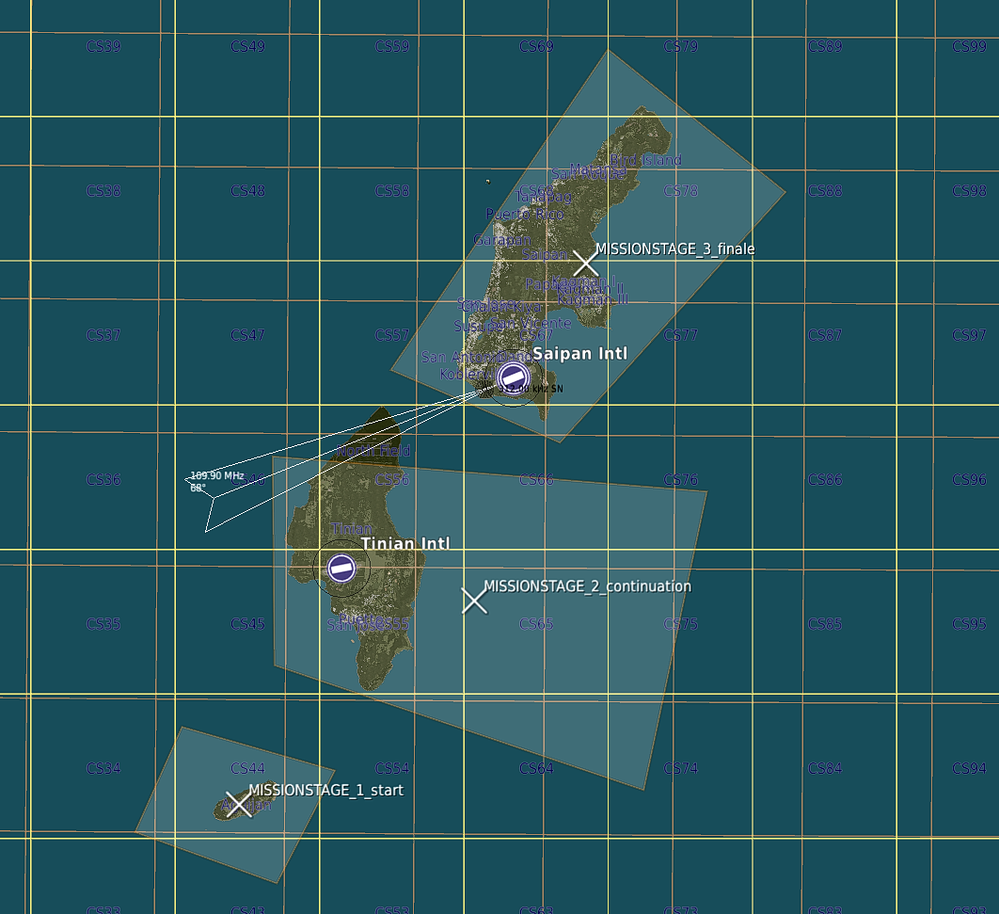
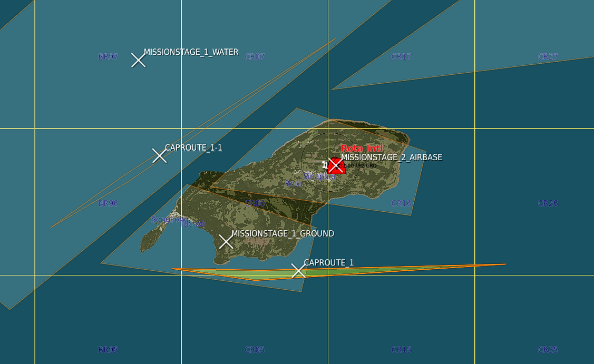
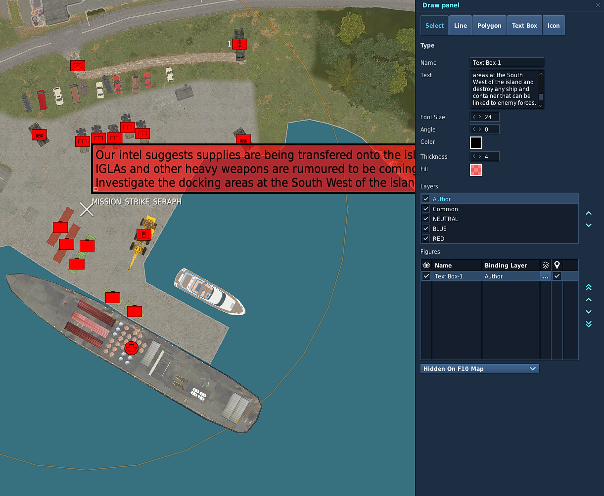
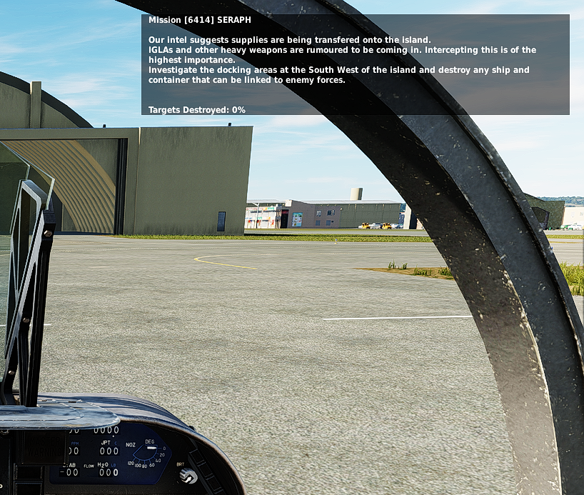

Tutorials
This guide is to get you started building your first Spearhead mission.
Spearhead was created to enable the mission maker to worry as little about the running, timing and scripting
and most about the setting and looks and feel of the mission.
In the example we'll show how you can create a simple island hopping mission
Include the script
Read here how to include the Spearhead script in your mission first.
Stages
In general, stages are the backbone of a Spearhead mission.
They define the flow of the mission and what is active at what time.
Don't worry, it can be changed and adapted later on, but it's best to translate your mission idea into stages first.
Stages are defined by trigger zones.
They'll be picked up by Spearhead when named according to the naming convention:
Stages are divided in primary stages:
or secondary stages:
Note the x before the number. This marks it as "extra"
Secondary stages will follow the order number, but are not required to be completed before moving on to the next stage numbers.
For this Demo mission we'll create 3 stages.
Each stage will have it's own trigger zone.

There's 3 stages now.
The first
The second
But will be fully activated when stage 1 is complete.
Pre-activated means that the SAM missions and Airbase units will be activated.
This is the difference between SAM and DEAD missions, but let's not get into too much detail at this time.
You can ofcourse create as many stages as you want.
You can also change the amount of stages that get pre-activated.
By default Spearhead will pre-activate 1 stage ahead.
This can be changed in the configuration.
Create Missions
Now that we've created the stages we can start adding missions to them.
Missions are also defined by trigger zones.
They'll be picked up by Spearhead when named according to the naming convention:
Where
CAS
Personally CAS is one of our favorite mission types.
Mostly because it's easy to set up and creates a truly immersive experience.
SAM
STRIKE
Setting up CAP
If you don't want to use the CAP managers withing Spearhead you can skip this and continue to Setting up Missions.
However CAP is one of the painpoints in a lot of missions and setting up a dynamic feeling airspace can be
quite the challenge.
With the CAP managers we've tried to make this a lot easier.
A CAP group needs to follow the following naming convention:
The first two are marked with
Meaning that for this airbase there is 2 CAP units max at a time flying out.
In this case all groups have
Before they actually RTB an event is triggered 10 minutes before the actual RTB task. This event
will trigger a backup unit to startup and fly out to take over.
Creating CAP Routes
Creating CAP routes is not needed per se, but with a multi-stage stage (we have 2 stages with
Similarly with huge stages.
If there is multiple zones it will "round-robin" over them.
If no CAP route is present the unit will fly a route generated differently per zone:
If you want to create your own CAP Routes you can!
For this example I created 2 CAP routes inside of the 2
As you can see below there's a nice feature you can exploit. As long as the

Well, nice, we're done setting up the initial CAP effort.
If you want to change values for the CAP routes please read about how to configure it here: Cap Config
Mission Briefings
So now we've created some missions we also want to add briefings to them. This is pretty easy with Spearhead.
To do so click on
On the right click
Give the briefing a name (It's not used, but can be nice to use to reference the briefing later) and add the briefing.
The text box is quite small, but can have a lot of text. Easiest is to edit the text in an editor of choice and paste it into the box afterwards.
Keep the binding layer to "Author" only. That way it doesn't show up for anyone other than in the mission editor.
See the two images below. The left shows the


We are now done creating a first mission. Hit fly and test it.
Check all references for way more features and keep up to date with the latest changes as they come along!